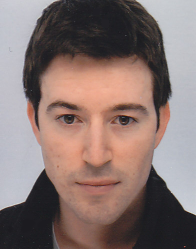

Software Engineer
Fullstack Web Development
Core Skills
- Proficient in TypeScript, Python, and C++99
- Experience with React, Next.js
- Database expertise: PostgreSQL
- Cloud platform: Digital Ocean
- Version control: Git, GitHub
Tools & Technologies
- Development: VSCode
- AI assistant: Copilot
- Containerization: Docker, Docker Compose
- CI/CD: Jenkins
- System Administration: Debian, Bash scripting
Experiences
-
2018–2023 (5 years)
CDI in Lannion -
R&D Software engineer (4G)
Work on a Nokia 4G multiple UEs simulator. Embedded development and maintenance of L2 processes launched on DSPs: UE Scheduler, DL HARQ, DL MAC. Performance investigations to reach maximum throughputs.
Investigations about various U-plan issues. Agile software development: SCRUM.
Contribution to reach 2.1Gbps in downlink on 4UEs (massive MIMO with 20 layers).
Contribution to ARM porting (Texas Instrument: Multicore DSP+ARM KeyStone II System-on-Chip).- embedded development: C++99 (on Texas Instrument DSPs)
- version control / code review: Git / Gerrit
- continuous integration / delivery: Jenkins / Zuul
- automatic testing / scripting : lua + robot + bash
-
2016–2017 (1.5 year)
CDI in Nozay-Villarceaux -
Telecom system integrator
Intégration of Nokia 9500 Microwave Packet Radio. Integration of the modem board, radio board, and assembled product (OutDoor Unit). Method: SCRUM.
- network management : Nagvis/Nagios, Opengear console server, scripting, telnet, SSH
- telecom / embedded software : Broadcom (vxWorks), Eband (80GHz), FPGA, GPIO, Spectrum Analyser (Anritsu)
- automatiques tests : C++ (CppUnit), Python
- continuous integration : Jenkins, JIRA
-
2011–2015 (3 years)
Thesis in Lannion -
Telecom researcher (PhD student)
Industrial thesis at Orange Labs supervised by Adlen Ksentini / Yassine Hadjadj-Aoul (IRISA) and Christophe Betoule (Orange Labs). Subject : "Design and performances study of a self-configurable solution for future transport networks".
Study of the packet architecture LOCARN (Low Opex Capex Architecture for Resilient Networks) in the operator transport ecosystem (IP, MPLS, Carrier Ethernet, OTN / WDM). Positioning of the solution compared to the GMPLS control plane, Autonomic Networking and SDN. Complete development of a simulation model in C++ and Python (OMNeT ++ network simulator). Contribution with two architectural proposals improving the scalability performances of the solution.
-
2011 (6 months)
Internship in Lannion -
Telecom intern
Internship within the Envision project. Development of a stream translation system allowing a network operator to benefit from multicast for punctual events, transparently or in collaboration with an overlay application.
Complete demonstrator implementation with the GNU/Linux kernel, initiation to the Junos-SDK framework (C / C ++). Definition of test cases, traffic simulation with N2X servers, design and development of the multicast controller (Java) and redaction of the documentation.
- networking: NAT, filtering, static multicast routing
- protocols: PIM SM SSM, IGMPv3, ISIS
- tools: N2X Server (traffic simulation), iptables, smcroute, SSH, Juniper M7i Router, Junos SDK 10.4
-
2010 (6 months)
Internship in Chinon -
Software intern
Intership in the Endel Pôle Nucléaire group
Development / deployment of Aguenau, a site management application. Software maintenance and extensions according to users feedbacks.- Microsoft technologies: Terminal Service, VBA and Transact-SQL
- study of the network architecture deployment at the national level
- Result:operational application for the two mission's sites: Chinon and Chooz
Education
-
2012–2015
first class honours -
PhD in Computer Science
« Diplôme de docteur de l'université Rennes 1, mention informatique »
Computer Networks - Rennes 1 Science University
CIFRE grant at Orange Labs - 2010–2011
with distinctions -
Master degree in Computer Science
« Master 2 pro informatique : Ingénierie des Réseaux »
(Computer Networks)
Degree from the Rennes 1 University - 2009–2010
with distinctions -
Master degree in Computer Science
Software Engineering - Angers Science University« Conception et Développement de Solutions Informatiques Intégrées »
Publications
-
International Workshop
IEEE Globecom Workshop on Research and Standards
(Dec 2014, Austin, United States)D. Le Quere, C. Betoule, R. Clavier, Y. Hadjadj-Aoul, A. Ksentini, and G. Thouenon. « Towards a Large Scale LOCARN »
-
Journal (Special Issue)
Studia Informatica Universalis, pages 74-104
(12 June 2014).D. Le Quere, C. Betoule, R. Clavier, Y. Hadjadj-Aoul, A. Ksentini, and G. Thouenon. « Presentation & evaluation of LOCARN: low opex and capex architecture for resilient networks ».
-
International Conference
Innovations for Community Services (I4CS 2014), 14th International Conference, pages 1–8
(June 2014, Reims,France) Best Paper AwardD. Le Quere, C. Betoule, R. Clavier, Y. Hadjadj-Aoul, A Ksentini, and G. Thouenon. « Scalability & performances evaluation of LOCARN: low opex and capex architecture for resilient networks ».
Languages
- English : CLES level 2 (TOEIC equivalent score = 785 points)
Interests
- Sport : cycling, windsurfing, badminton (7 years)
- Music : piano beginner, guitar (7 years)